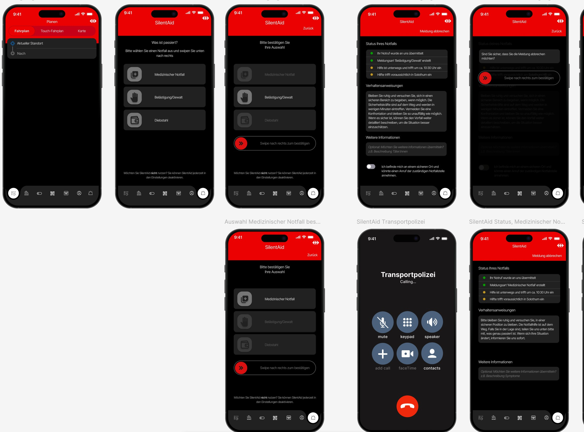

SilentAid
Das Feature SilentAid ist eine Erweiterung der SBB-App, welches wir entwickelt haben im Rahmen des Moduls WPR2. Mit SilentAid können Nutzer:Innen schnell und diskret Hilfe rufen. Zur Visualisierung habe ich dieses Mockup erstellt.
Technologien: Figma
Zum Prototyp